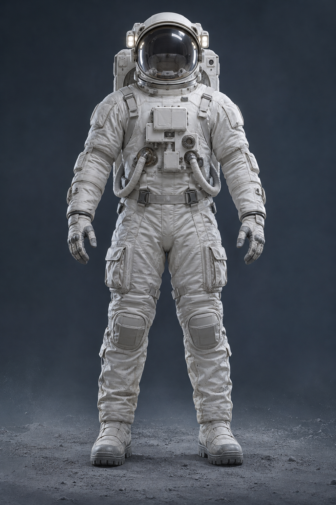

Lunar medicine / interactive mission briefing
Shock in a hostile
enclosed environment.
A serious injury inside a lunar habitat can lead to shock. Select a point on the astronaut to explore how the condition affects the body and how the crew can respond.
● SELECT A POINT TO INVESTIGATE

01 / 04MISSION CASE FILE
Sources & context
Astronaut image generated with AI. This is one illustrative scenario: severe bleeding causes suspected shock in a hostile enclosed environment. The exact cause was not specified, so it is presented as an example. The Lunar Med Pod is hypothetical; mission clinicians direct treatment. The Activity 3 videos were not supplied.
American Red Cross: shock signs and first aid · NHS: first aid and shock